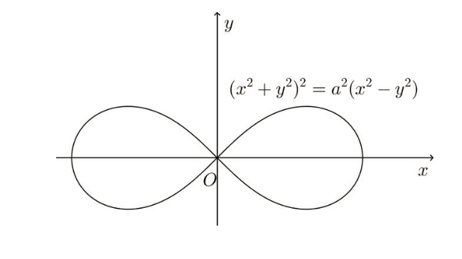
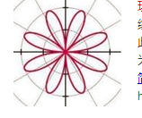
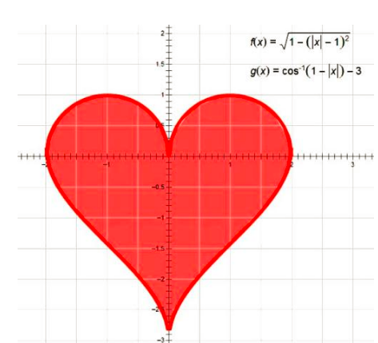
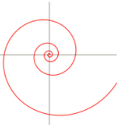

在过去的600多个日日夜夜，你陪我走过了春天时的茫然与彷徨，经历了夏日里挥汗如雨，奋笔疾书，再到金秋时节的千锤百炼，烈火焚烧；直至那一段考前的日子，漫漫冬日里，寒风凛冽，细雨连绵。有时，我也会把你当作横亘在我面前的不可逾越的鸿沟；有时，也会把你当作磨砺意志的试金石，我想，是时候作一次真情的告白了。没错，是我对你这两年来不离不弃，陪伴始终的真情坦白。
还记得两年前，学完高数后，我怀着百感交集的心情和你许下的约定，希望你能在两年之后，在考研的战场上助我一臂之力。从那以后，我就不曾停下追随你的脚步，希望看清你那若隐若现的身影，我多么希望能够和你站在一起，相互说笑着跨入研究生院的大门。然而，直到今天，你依然是那么一副高冷的样子，不紧不慢的朝前走着，而我和你的距离，一直不曾拉近。还记得每一次看到书本上千奇百怪的积分符号，脑中总会浮现出你的戏谑而不屑的笑容，嘴角微微上扬，仿佛是在看一场业余演员表演的幼稚演出。而我，却妄图用自己浅薄的学识来对你进行理性的解读，这在你看来一定是天方夜谭吧。我以为自己一定会因你的艰涩而疏远，但你确实就在我的身边望着我，和我若即若离，无论我是心急如焚，还是萎靡不振，你把两只手插在裤腰袋里，一脸漠不关心的样子，嘴里嚷嚷着：” 万物皆数的纯粹理性与逻辑岂是你这样一个半路出家的文艺青年所能领会的? ” 看着你的背影，我想，既然无法用理性的智慧穷尽你的世界，那么我就用感性的眼光去了解你，走进你的内心。
极限与连续构建了整个微分世界，而函数关系则用统一的规则刻画了神奇的自然。当时光流逝，走至世界的尽头，我却依旧停留在你的身边，与你生死相依。这就是属于极限的浪漫；而看似一成不变的法则在不同的坐标系下呈现出变化万千的等式，奇偶性对称，旋转翻折演化出了多少物理学中伟大的定律。r=1-cos t所描绘出的爱心里诉说笛卡尔和公主的爱情故事，r =t画出了螺旋的神秘，r=sin t 绘出了玫瑰的芬芳。还有双纽线，叶形线，在交错扭曲的线条中，展现着你中有我，我中有你的一生羁绊，用文艺的眼光看着你，我忽然惊觉，在你冷酷的面容背后，原来也藏着如此动人的唯美。还有奇妙的微积分，以一己之力，化整为零，化曲为直，用微元解构了我们生活的三维世界。从牛顿到莱布尼兹，再到费马，罗尔，拉格朗日，一代又一代的数学家，为你的神秘而深深着迷，为你的奥秘呕心沥血，前赴后继。而在离散的数字世界，我又见到了妙不可言的泰勒展开，他就像一座桥，将超越在初等运算之外的函数与多项式紧紧联系。还有阿贝尔定理，能从一点延伸至整个直线，让未知的级数世界变得不再神秘。所有这些纯粹的理性，缜密的逻辑，构建了这样一个多姿多彩的感性世界，叫我怎能不爱你？
在历史长河中，有许多人因你而千古留名，留下许许多多动人的故事：对世界的探索引发出了天圆地方的讨论，进而演化出神奇的割圆术，让祖冲之名垂千史；对自然的揭秘引出了万物皆数的哲学，让毕达哥拉斯和他的定理为人们所铭记。同样关于极限定义的争论引发了第2次数学危机，而人们却因此拓宽了你的世界，构建了高等数学。在追寻你的过程中，我看到了“我思故我在”的数学奇才笛卡尔所写的浪漫情书；也看到了欧拉，伯努利，拉格朗日，柯西，四代数学家之间令人崇敬的师生情怀；还有那位无人赏识，英年早逝的数学家阿贝尔令人同情万分的遭遇，以及那个不务正业的律师所留下的千古难题——费马定理的证明历程。不管我看到的这些是传说还是历史，这些故事的背后蕴藏着一代又一代人无私的奉献，以及追求真理，百折不挠的探索。你的每一个定理都像是一部精彩绝伦的舞台剧，诉说着数学界的起起落落，悲欢离合，而关于定理的证明则是这个舞台上永不谢幕的演出。我想，真正爱你爱到深入骨髓的人一定对我说的这些深有感触，但可惜，我并不是你的至交好友，更无法与你相伴一生，只能从历史的角度，欣赏你不为人所知的感性之美和人文精神。是的，这世间的每一个事物都是理性与感性的统一体，当数学和历史相交汇，你便能触及人心中的柔软，无论是通过妙趣横生的图形，还是纷繁复杂数字演算出的神奇结果，亦或是那些数学家关于你的种种动人故事，都让那些公式定理有了人情的温度。
想到这儿，我微笑着，抬头望向虚空处并不存在着的你，回应道，我虽然不了解你的理性世界，但我却能看到你不为人知的感性一面，同样也能够欣赏你的美，我们并不是敌人，对吗？正因如此，我一直没有离你而去，留在你的身边并不仅仅是因为功利的需要，还因为在接近你的过程中，所感受到的关于你的独特魅力。也许在考场上，你并不能够满足我的愿望，但在学校之外的地方，你也曾给我带来深深的感动。你问我恨不恨你？我承认曾经有过那么一段时间，你带给我的是绝望，是孤独，是无助。也许我的脑袋里只能装下唐诗宋词的风花雪月，红楼梦的才子佳人，却装不下你的有理有据，环环相扣。也因而对你充满憎恨和无奈的叹息。甚至充满深深的恐惧。但与我相伴将近20年，能够走到今天这一步，你对我已经仁至义尽了，我想，无论结果怎样，我都会欣然接受，因为你已经给了我很多生命体验，还带我参观了以前所不曾见过的奇妙的世界。也许从我选择走理科这条路开始，我俩已经分不开了。
我一直不曾离开你，虽然你长得抽象而孤傲，虽然你一次又一次的伤害了我，但是我知道你内心的美好，你虽虐我千万遍，但我待你如初见，即使读不懂你的深邃，我也一直把你挂念心间，愿你不负我，我也不负青春，若有缘再见，我还是会在你的身边。言尽于此，情深语浅。
你所看不起的学渣
秋天的怀念
附：数学世界的美丽图案

{kind=link}

{kind=link}

{kind=link}

{kind=link}
评论 1 0 0